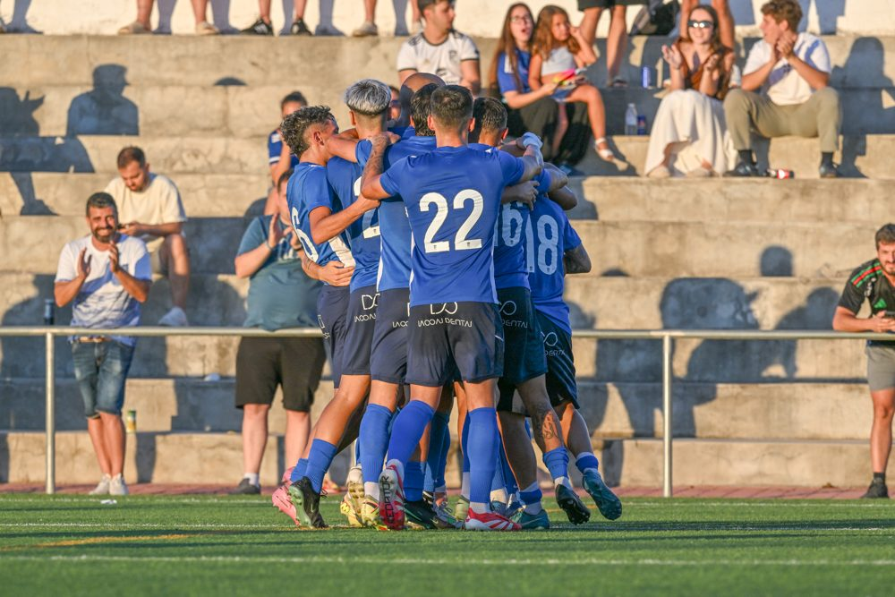
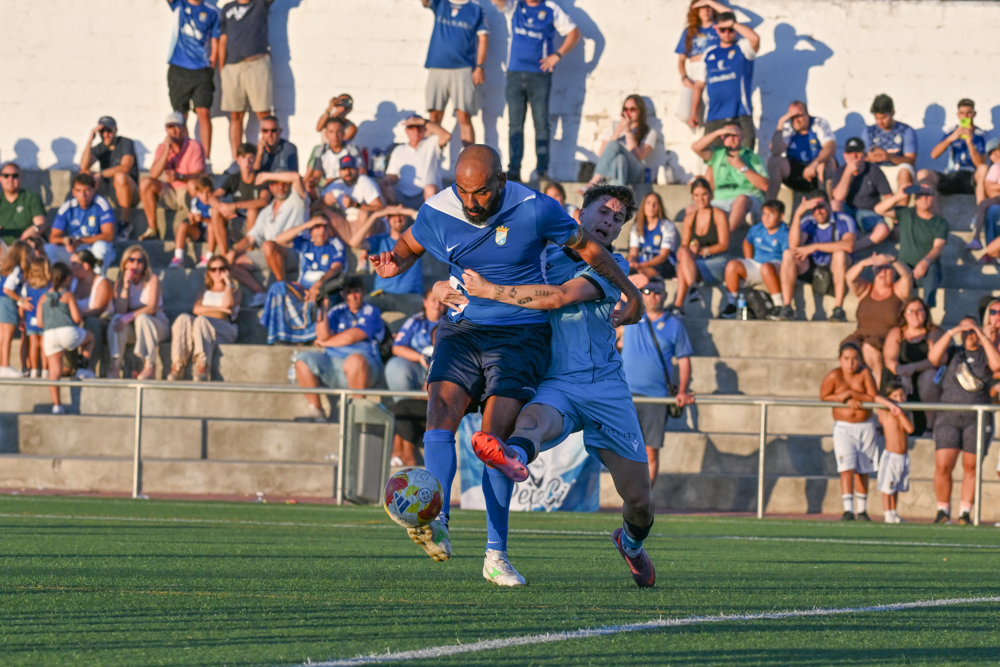
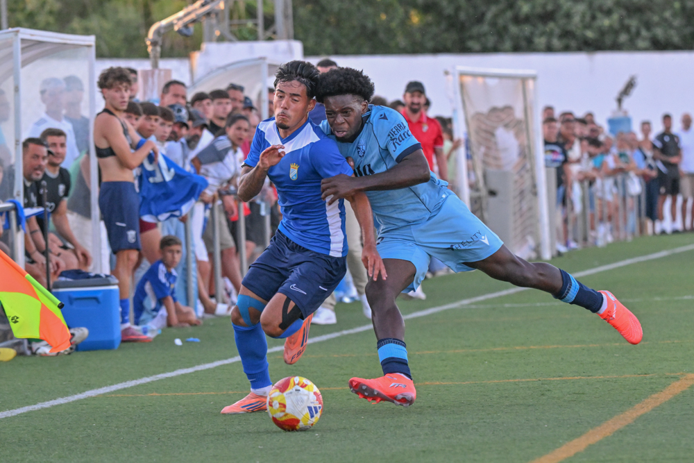

Xerez CD chain together their second summer win against Ceuta's reserve side

Photo: Diario XerecistaSecond outing, second win. Xerez CD keep building up their pre-season under Xavi Molist and this time lifted the Andrés Chacón Oñate Trophy after beating a stubborn Ceuta B side at La Barca de La Florida. A scrappy match, goalless until well into the second half, which the blue-and-whites settled thanks to a set-piece routine: a corner taken by Zequi that Jaime López headed home to open the scoring.
The Ceuta reserve side, still feeling the physical demands typical of the start of the season, weathered the early storm and grew into the game as the minutes passed, standing up to Molist's men and even getting the better of them in some spells of the second half. However, Jaime López's goal broke the deadlock and settled the result.
First half
To start with, the coach set up a back line with Manu Galán and Josete as centre-backs, flanked by Guille Campos and Chacartegui on the wings. Isma Gutiérrez and Isuskiza shared the holding duties in the double pivot, with Zelu and Óscar Lorenzo out wide, while the attacking pair was made up of academy players Samu Rubiales and Rober Sánchez.
Wearing blue shirts and black socks, Xerez CD went all out from the start, stifling the Ceuta side's build-up play from the first minute. After ten minutes, Nel had to work hard to tip a Guille Campos header round for a corner, and from the resulting set piece Josete went close with another header that flew over. Two warnings that Molist will need to keep polishing, knowing how decisive set pieces are in a division as tight as the Segunda Federación.

Photo: Diario XerecistaBlue-and-white dominance translated into a string of attacks that deserved better luck. Óscar Lorenzo tried his luck with a chip from the edge of the area that hit the crossbar after a slight touch from Nel. Shortly after, it was Zelu who rattled the post with a fierce direct free kick. And before the quarter-hour mark, Chacartegui forced a fine save from the Ceuta keeper with a low, powerful shot.
Ceuta B, for their part, began to venture forward with a few tentative attacks before the drinks break. After the regulation pause, Molist made his first tweak: Manu Rosado came on for Samu Rubiales, which saw Rober Sánchez drop back into the attacking-midfield role and Óscar Lorenzo move up front. Even so, the team lost intensity as the first half went on, having produced their best football in the opening twenty minutes.
Second half
The interval brought a radical change of personnel: Molist made ten substitutions at once, leaving only Guille Campos on the pitch, though moved to centre-back. Opposite them, the Ceuta B side coached by Jerez-born David Álvarez "Polaco" — a team keen to play the ball despite the difficulties of the artificial pitch — used the start of the second half to level things up, a phase in which the blue-and-whites found it very hard to string several passes together and in which the Ceuta reserve side even took control of midfield, an area dominated by Raúl López, Jaime López and Mario Peregrina.

Photo: Diario XerecistaTempers flared after a challenge by José Miguel on Guille Campos, the prelude to the first goal of the match. Zequi took the free kick and there were protests over an alleged foul on Fali in the area, but play went on and ended in a corner. Once again Zequi delivered the ball into the box and this time Jaime López rose above the defence to power home a header: 1-0.
The referee disallowed a second goal by Mario Peregrina for an earlier offside by Rubén Mesa, a very lively striker throughout his time on the pitch, who forced a turnover that Jaime Fernández almost exploited thanks to his pace, although he could not beat Nel one-on-one. Jaime López himself then had a chance for the second after a pass from Zequi, but his effort went wide. An alert Nel again denied both Zequi and Rubén Mesa in the closing stages. Persistence eventually paid off and Mario Peregrina sealed the final 2-0 close to the end.
Match facts
Xerez CD: Carlos Pantoja, Guille Campos (Salas, 75'), Manu Galán, Josete, Chacartegui, Isma, Isuskiza, Zelu, Óscar Lorenzo, Samu Rubiales (Manu Rosado, 30') and Rober Sánchez. In the second half played: Marcos Alconchel, David Lachica, Fali, Jaime López, Zequi, Mario Peregrina, Rubén Mesa, Raúl López, Jaime Fernández and Ganfornina.
Ceuta B: Nel González, Magno, Naranjo, Juan Esteban, Jon Ander, Goodluck, Abraham Bueno, Antonio David, Owusu, José Miguel and Sergio González. Later came on: Pepe, Suleiman, Adán, Chairi, Miñón, Adrián, Paco Fernández, Pelayo and Pablo Vílchez.
Goals: 1-0 (70') Jaime López. 2-0 (89') Mario Peregrina.
Referee: Antonio Ruiz España, who booked José Miguel and Guille Campos.
Notes: 17th edition of the Andrés Chacón Oñate Trophy, played at the ground of the same name between Xerez CD and Ceuta B, in very high temperatures and with a notable presence of Xerez supporters at the second summer fixture for Xavi Molist's side.
🇪🇸 Leer en español ← Back to home